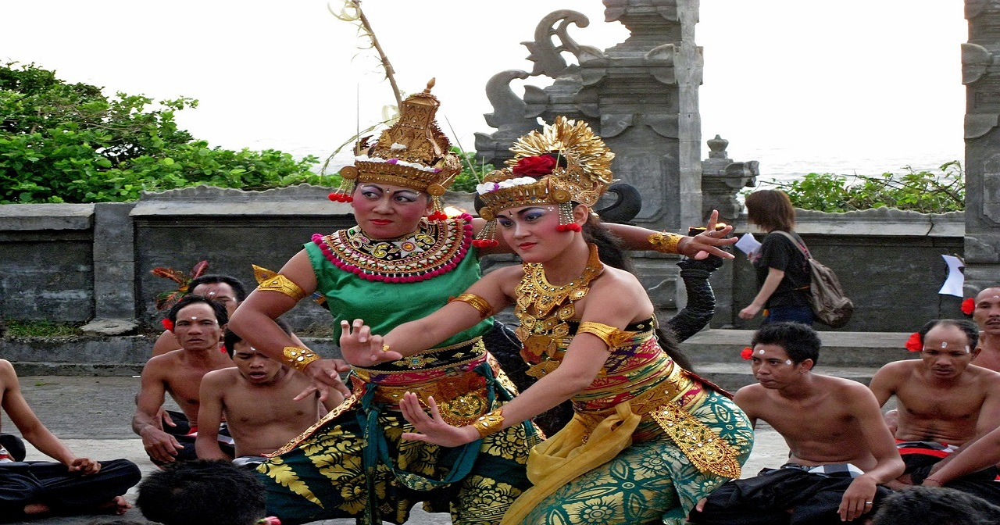
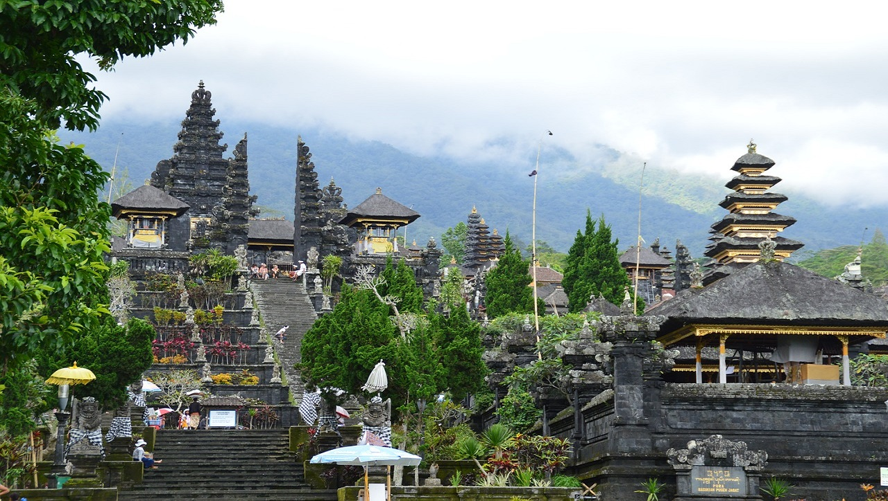
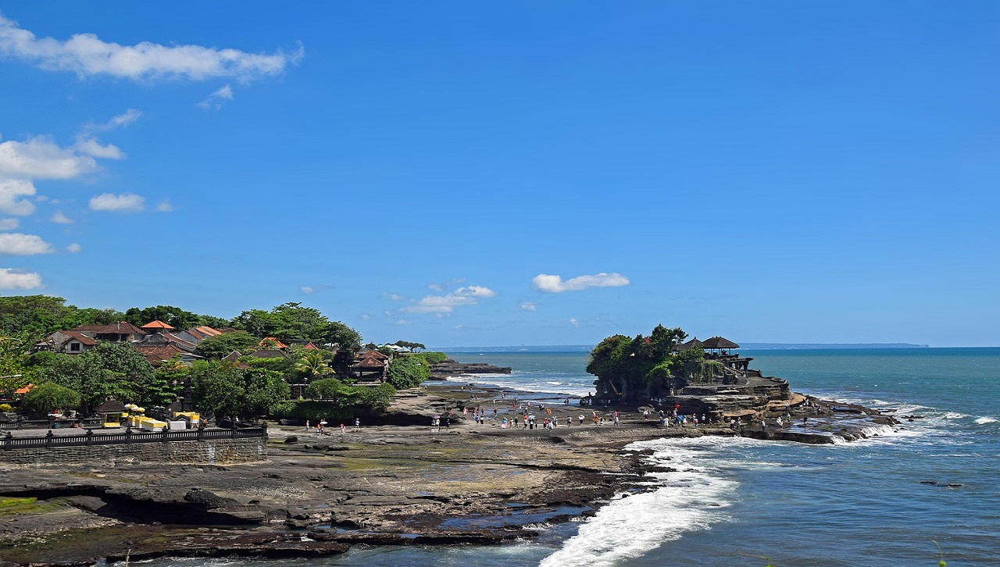
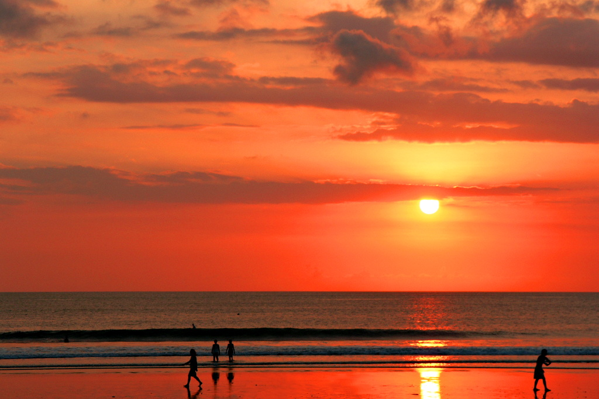
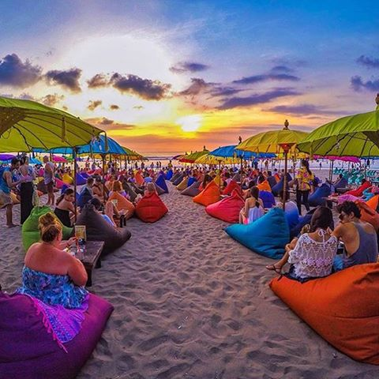
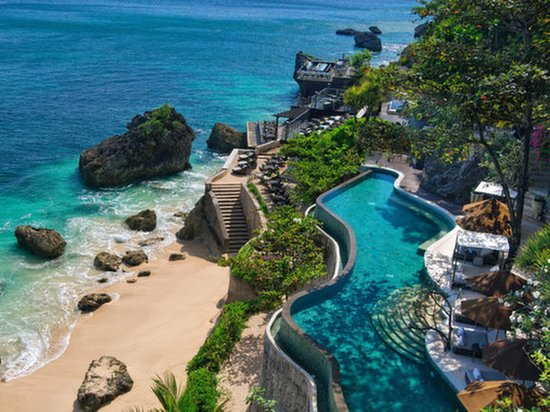
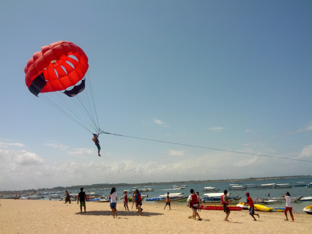
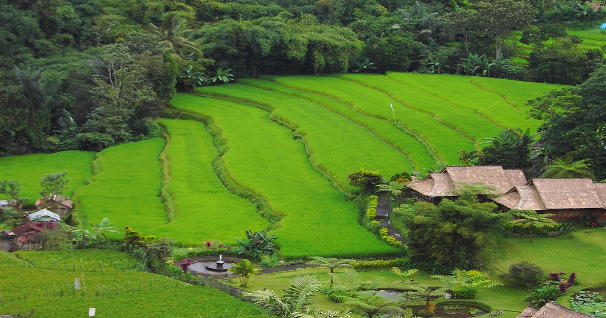
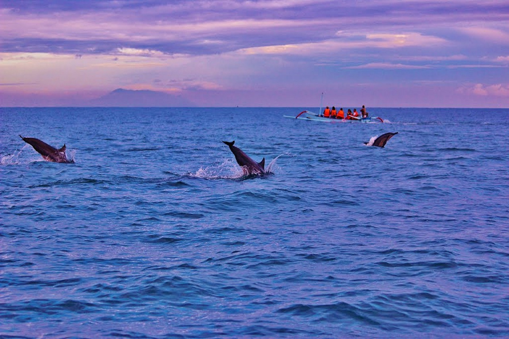
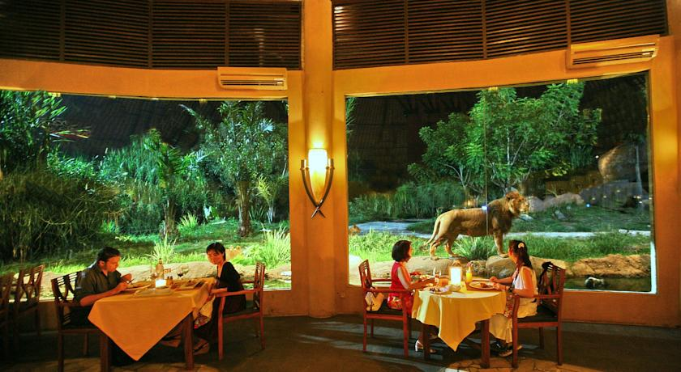

Kecak Dance
The Kecak Dance is a musical drama depicting the battle of Ramayana. The Ramayana is an Indian poem that narrates the struggle of a divine prince (Rama) to rescue his wife (Sita) from the demon king (Ravana).
A group of performers wearing checkered black and white clothing on their waist chant in the background "cak" with their arms in the air.
Kecak Dancers
Kecak Chanting
Temples
With the Hindu Temple being a sacred place, visitors must follow rules including wearing sarong to cover their legs, not exposing too much of their upper bodies, not pointing to Holy object with their feet. Despite the strict rules, Hindu temples, with their enticing architecture, are worth to visit.
Temple by the Mountain
Temple by the Ocean
Beaches
- Kuta Beach
- Seminyak Beach
- Jimbaran Beach
Kuta Beach is also called the sunset beach based on its Western position in Bali. Kuta's long and consistent waves are great for surfing.
Sunset at Kuta Beach
Several fine dining and sophisticated restaurants, as well as night clubs line the beach, where customers can indulge all night long.
Lounging by the Beach
This beach is peaceful and surrounded by luxury hotels. Perfect for a honeymoon or getaway.
Private and Peaceful Beach
Watersports
There are many fun water activities such as snorkeling, scuba diving, parasailing, flying board, riding banana boat, fly fish, and jet ski.
- Adi Watersports « link »
- Pandawa Marine Adventures « link »
Here are few watersport agents for ticket booking and prices:
Snorkeling
Parasailing
Rice Fields
The layout of the rice fields are in a step pattern from the top to the bottom of a hill, making for an amazing landscape. In fact, the rice fields in Bali were part of the scenery from the movie "Eat, Pray, Love" featuring Julia Roberts.
Rice Field in Ubud, Bali
Sanctuary
- Dolphin Watching
- Bali Safari and Marine Park
Visitors can observe dolphins off the coast of Lovina Beach by joining daily early morning cruises.
Dolphins
Visitors can join a safari bus to observe wildlife up close, ride and feed the performing elephants, watching lions from inside the Tsavo Lion Restaurant.
